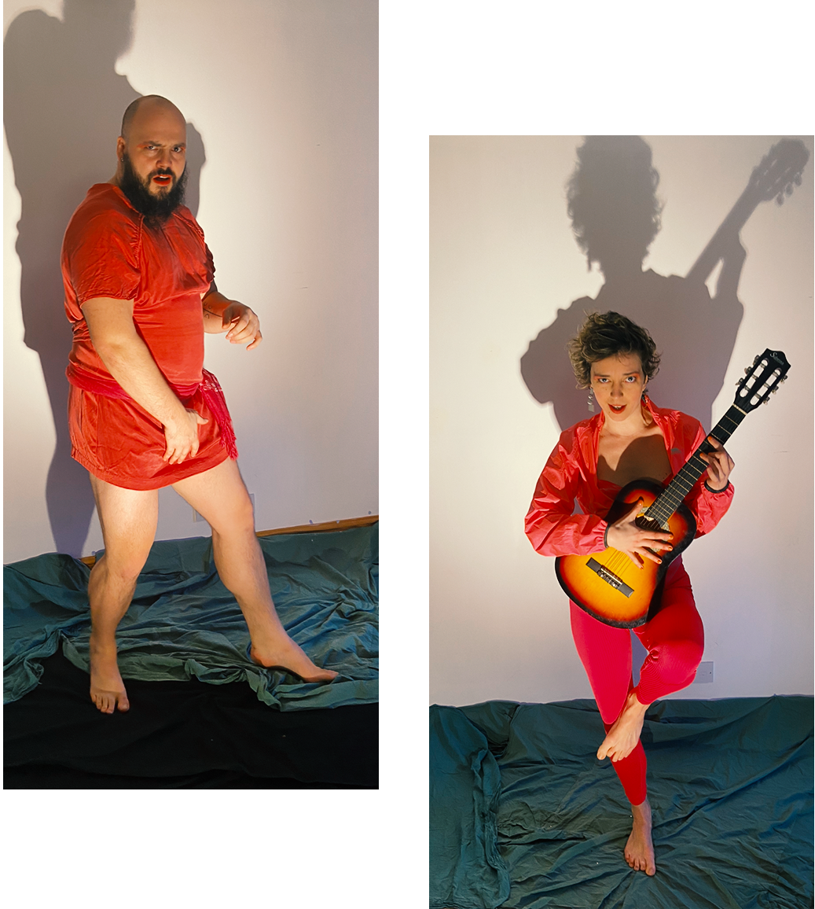

Are you prepared for an electrifying explosion of funk, punk, and tender ballads? Are you ready to ruin your ears, eyes and hearts for other bands? Hailing from the heart of Yorkshire and the vibrant streets of Berlin, Sporgasm is here to shake you to your very core.
Sporgasm, comprising sweaty bear Jon Whitten and succubus extraordinaire Polina Tikk, embodies a spirit that is as raw as it gets. But what truly sets Sporgasm apart is their lyrics. Every song is an audacious exploration of ecology: hymns on phenomenology, stadium anthems on mycorrhiza and punk rock wrecking balls on symbiosis. Listening to their music is like recieving a bachelors in biology from James Brown, the Ramones and Norah Jones.
Come to experience the unadulterated mayhem of our live performances! Sporgasm is to perform live in Berlin first week of July 2023. Venue to be confirmed.
Links: Jon's INSTAGRAM, Polina's INSTAGRAM
